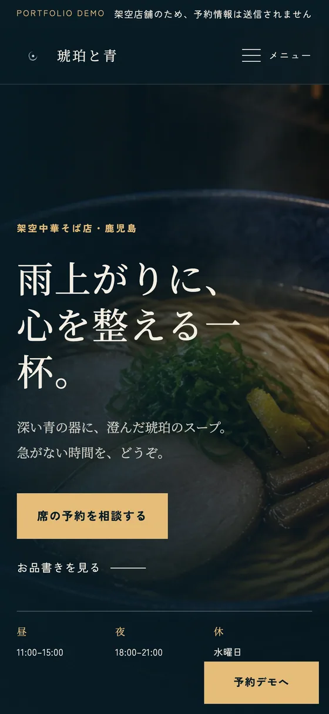

Work 01
琥珀と青
雨上がりに、心を整える一杯。

課題
決めきらない人を、追い出さない
写真の力が強い題材です。ここで言葉まで強く押すと、広告のようになって店の空気が消えます。「今すぐ予約させる」ではなく、「今度行ってみようか」と思ったまま閉じてもらえる状態を目標に置きました。
設計
二色と、短い言葉だけに絞る
色は深い青と琥珀の2色に固定し、湯気の立つ丼を画面いっぱいに置きました。文字は丼の邪魔をしない量まで削っています。予約ボタンの文言は「席の予約を相談する」。確定ではなく相談だと分かる言い方にしました。上部には常時「PORTFOLIO DEMO 架空店舗のため、予約情報は送信されません」の帯を出し、架空であることを隠していません。
学んだこと
写真が強いほど、文字は減らす
最初はコピーをもっと入れていましたが、削るほど写真が効きました。強い素材があるときの自分の仕事は、足すことではなく引くことでした。

スマートフォンでは、丼の写真を画面幅いっぱいに残したまま、予約ボタンを親指の届く位置に置き直しました。